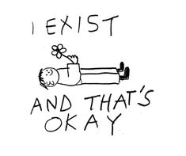

September is Suicide Prevention Month, a time when we come together to remind each other that no one should have to face their struggles alone.
If you're feeling lonely, sad, broken, or lost, I want you to know that your feelings are valid, and you don't have to carry this burden by yourself.
Life can be incredibly hard, and it’s okay to feel overwhelmed by disappointment or pain.But please remember that there is always hope, even
when it feels like there’s none left.Your life is precious, and there are people who care deeply about you, even if it doesn’t always feel that way.
Reaching out for help doesn’t make you weak—it shows incredible strength. Whether it’s a friend, a family member, or a mental health professional,
there are people ready and willing to listen. You don’t have to go through this alone.
This month, let's break the silence, share our stories, and support each other.
You are not alone, and your life matters. Please hold on, and reach out. There is hope, and there are brighter days ahead.
LONELY
DEPRESSED
DISAPPOINTED
LOST
BROKEN
NEGLECTED
I've gathered these for you in the hope that they bring you some comfort during this difficult time.
I know things have been hard, but hopefully, this small gesture can help ease your pain, even if just a little.
You’re not alone, and I truly hope this provides some relief and makes things feel a bit lighter for you.